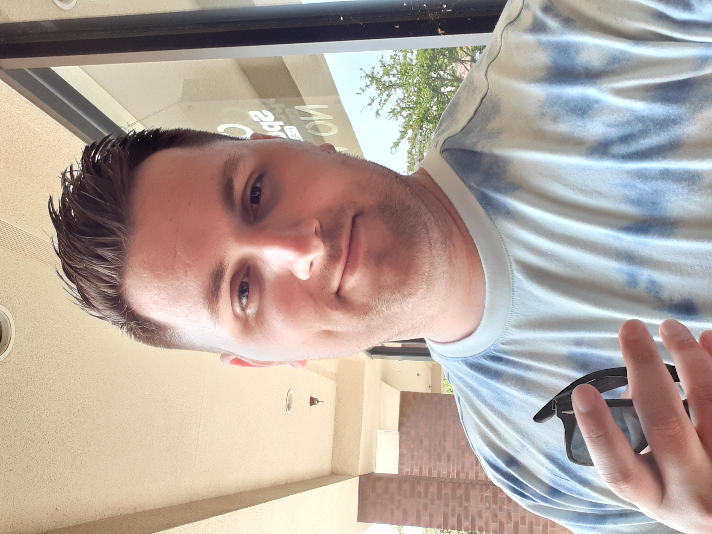

Smells like an Idiot
New song... my room smells terrible and I'm trying to make it smell better.
I washed everything and threw everything else out. I am leaving the windows open and febreezing... it's interesting the metaphysical implications of getting rid of a bad smell. It's kind of like how darkness and light are often talked about. Light expels dark and dark is the absense of light. The bible talks about this often, how the evil people love the dark and how god will bring everything into light in judgment.
Getting rid of a bad smell is different. It's not as simple as light. I have to find the root of the smell, and get rid of whatever is actively causing it. (like a wet towel) Then I have to allow the stale air to escape out the window. Then I have to install an air freshener and walk around febreezing. It's so bad. It's starting to smell a little better because I have done everything I could possibly think of.
I got rid of my air mattress and went back to sleeping on the floor. I think the air inside the mattress was one of the causes. I put all my towels out of my room other than one that is hung up and 2 that are just washed and dried.
If I can't control my environment I can't control very much. I at least smell good personally. My guitar strings are new, they used to smell. My longboard is new... my blanket is washed. My carpet was just cleaned last week. I really want to be able to control my environment before I expand outward. I also want a good home to bring girls back to. I'm so happy to have been alerted to the importance of scent. I will never take it for granted again. I hit some sort of threshold and now smell is super important to me and I can't wait until it smells fantastic in here. I've worked hard on it all night other than hanging at the pool with my roomates sister tonight until the security guard kicked us out. It's really amazing living here. We even just got a brand new washer and drier installed so there's no reason I shouldn't be able to smell great and have a great smelling room.
Anyway, I'm just an idiot who can barely control the smell of his own room or self, and orders doordash to work when I'm at home. That is the inspiration of the song. PEACE
Candace Owens is the shit
I really like Candace Owens because she makes sense and calls out the brainwashing in our society and schools.
08/05/2021
Almost Pro
I really enjoy winning in chess and winning in call of duty. These activities are extremely engrossign and competitive but also easy to do, thanks to online gaming. If I want to play some one in my level in chess in real life I need to drive to Old Agoura to play this Russian who is better than me, or I'd have to travel to a tournament of some kind.
With Call of Duty it's rare to have a friend as good as me and even then split screen is not as fun as online because there is screenlooking.
I truly enjoy these 2 activities but I think I'd like to get good at something else. I'm not actually the best ever in cod, I just had GOAT on my mind that day because of a Quantum of Conscience podcast I was listening to.
08/04/21
Levels
There's different levels of understanding reality. I'm going to explain them.
Level 1 - Fundamentalists

Religious Fundamentalism is the 1st level of Truth. It doesn't matter if they're Muslim, Christian, Catholic, Protestant, Jewish, Buddist, and any other. All of these groups suffer from the same groupthink and logical fallacy of thinking everyone at their church is correct and everyone at the other place of worship is incorrect.
These types of groups lack the ability and opportunity to think critically. They are buried in shame and do not ask obvious questions or address clear contradictions or counter-examples to their dogma. These types of people lack the courage to wrestle with their own doubt, and cling to books and rely on preachers to guide them like sheep. These are the types of folk who would donate large amounts to their church and even fall for indulgences back in the day (paying money to be forgiven of sin by the church) Donating to support a church sounds harmless, benevolent even, but this is only within the first level of understanding.
Level 2 - Atheists

Athiests have the good sense to run away from level 1 fanatics. They want no part of religion. They're well aware of the lack of critical thinking within fundamental religion and see themselves as above those equally mistaken groups, and they are indeed above them. An athiest will actually examine the logical structure of religious belief. They use their brains and actively pick the bullshit apart. Bravo. Congratulations on passing to level 2 of God's game you're playing, but there's much more.
If an athiest walks into a person with a level of understanding above them they will actually confuse them with a level one person. The true athiest sees himself or herself at the top, just like the level 1 people do. In fact, Athiests are equally as dogmatic as fundamentalists in thier athiesm. These typical athiests could all congregate into a church, or a subreddit and participate in group think. The critical thinking applies to their inspection of fundamental religions, but it doesn't apply to themselves within their own belief in no God. They insist there is no God. They give God no credit, and they bring great trouble upon themselves when they do. They're eager to convert you, just like the fundamentalists. Their critical thinking exists, but it's limited and they suffer from the same characteristics as the fundamentalists and lack originality or substance. An athiest person is a religious person. Atheism is a religion at war with itself, in denial of it's own existance.
Level 3 - Agnostics

Agnostics admit that they don't have all the answers. Maybe there is a God, maybe there isn't. There is more nuance and variation in this group and less vitriol. By admitted they do not know, agnostics open themselves up to potential truths. By not projecting their fixed beliefs onto the world, they can have an occassional glimpse into true reality.
Agnostics gathered in a group would have more stimulating conversation on religous topics, because they are able to ask questions and more focused on the quality of the question then the quality of their own answers to use as weapons the way atheists do to the fundamentalists. Also these Agnostics are more likely to switch between levels, whereas the other groups are less fluid. One agnostic may have never really thought about it, and another might have read all the holy books and athiest books and still can't make up his mind... both are level 3 technically, but the educated one's refusal to decide is more profound. But we're not done yet.
Level 4 - Truthers

When a person isn't satisfied on their quest for truth they progress through 1,2, and 3. But they cannot rest at 3. They swing wildly from belief to belief, trying on different ones like outfits at a shopping mall. They play and play and search and search for the perfect fit. It takes years. Eventually they end up in a youtube rabbit hole and learn that everything is upside down. They learn that the level 1 people have been fed partial truths to hook them into a lie. And same goes for each level up to 4. There is truth in Fundamentalism, Atheism, and Agnosticism, but not enough for the truth to get his fill.
After alienating most their friends and family the truther realizes that one of the fundamental religions warns of this: Christianity. True Christianity starts to occur to the truther. He left christianity behind when he graduated from level 1 to 2, but now at 4 he has to reexamine what he left behind with a critical lens of both 1 and the 2 he went into. He makes sure he didn't throw the Baby Jesus out with the bathwater.
Level 5 - Uniqueness
Level 5 is when the truther stops searching for truth outwardly and starts to instead turn inward and rediscover his or herself. This results in an overflow of creativity and productivity, like this website, kapeash?
08/01/2021
Vaccine Treason
I know of no reason why the vaccine treason should ever be forgot.